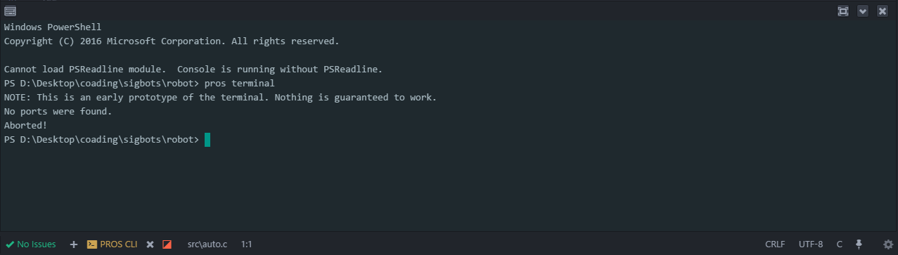

Debugging
warning
This content is subject to change as the PROS CLI for V5 is created.
The PROS API provides functions like printf that allow your robot to output information to a connected serial console during operation.
To view a robot's output, there are two officially supported methods:
Through the PROS CLI:
Running
prosv5 terminalon the command line will open an output stream from a robot connected over direct USB connection, VEXnet, or JINX.From within Atom:
Click the button labeled "Open cortex serial output"
A terminal panel will open at the bottom of the screen containing the output of a connected robot.
errno is a global value that is set when any part of the PROS kernel encounters an error. The value of errno is specific to each function, so check the function headers or the API docs for possible values and their meaning. If you think you're encountering an error in the kernel code, check the value of errno to see what's causing the issue.
Debugging in this manner is standard to other environments besides PROS. For further information on using errno, see the following tutorial: https://www.tutorialspoint.com/cprogramming/c_
JINX offers further debugging functionality over traditional debugging through print statements. For a full explanation of JINX's abilities and its use, see ../topical/jinx.